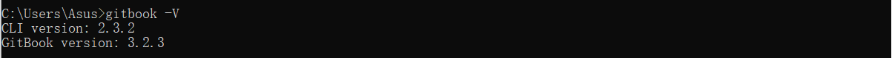
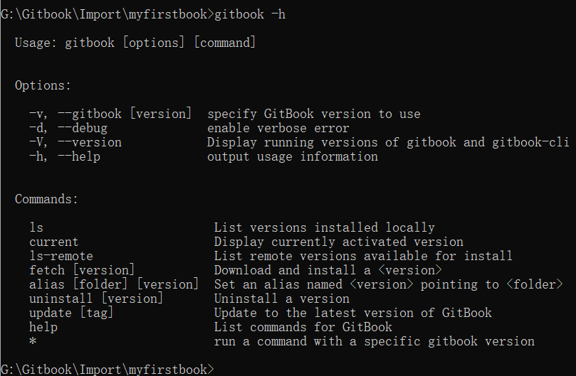
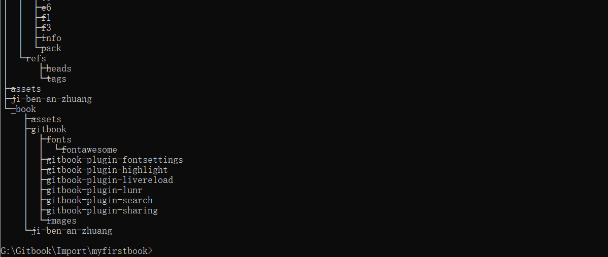
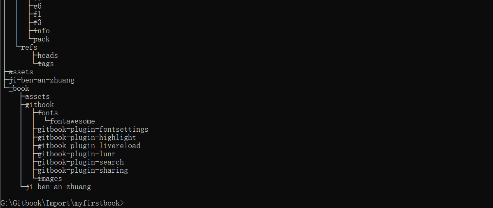

基于Gitbook制作电子书
# 基本安装
# 1. Node.js安装
官网下载nodejs直接安装
c:\pc\node -v
c:\pc\npm -v

# 2. Gitbook安装
安装gitbook
在cmd控制台输入如下命令进行安装：
C;\PC>npm install gitbook -cli -g
查看安装的版本：
C:\pc\gitbook -V

# 3. Gitbook命令行速览
Gitbook是一个命令行工具，使用方法：
本地预览
$ gitbook serve ./{book_name}
输出一个静态网站
$ gitbook build ./{book_name} --output=./{outputFolde}
查看帮助
$ gitbook -h

# 图书项目结构
# 1. README.md与SUMMARY.md
README.md
这个文件相对于是一本Gitbook的简介。
SUMMARY.md
这个文件相对于是一本书的目录结构。
# 2. 目录初始化
当SUMMARY.md创建完毕之后，我们可以使用Gitbook命令行工具将这个目录结构生成想赢地目录及文件
$ gitbook init
$ ls
README.md SUMMARY.md book end howtouse output publish
$ tree
 

# 图书输出
# 1. 输出为静态网站
本地预览是自动生成 $ gitbook serve
gitbook会启动一个4000端口用于预览。
 浏
览器打开：http://localhost:4000
浏
览器打开：http://localhost:4000
使用gitbook build参数 与直接与直接预览不同，使用这个命令，可以将内容输出到你想要的目录。
# 2. 输出为PDF
输出为PDF文件，需要先安装gitbook pdf
$ npm install gitbook-pdf -g
然后，用下面的命令就可以生产PDF文件了。
$ gitbook pdf {book_name}
如果，你已经在编写的gitbook当前目录，也可以使用相对路径。
$ gitbook pdf .
 然后，你会发现，你的目录中多了一个名为book.pdf的文件了。
然后，你会发现，你的目录中多了一个名为book.pdf的文件了。
# 发布
编 译书籍 $ mkdir book1 && cd book1
$ git clone git@github.com:lijixiang1/book_test1.git
$ gitbook build
创建gh-pages分支 删除不需要的文件
$ git checkout --orphan gh-pages
$ git rm -f --cached -r .
$ git clean -df
$ rm -rf *~
忽略一些文件
$ echo "*~" > .gitignore
$ echo "_book" >> .gitignore
$ git add .gitignore
$ git commit -m "Ignore some files"
加入_book下的内容到分支中
$ cp -r _book/* .
$ git add .
$ git commit -m "Publish book"
上传书籍内容到GitHub
$ git push -u origin gh -pages


# 结束
对于阅读类似于书籍的Markdown时，得自己一个个的文件点开才能进行阅读或编辑，而gitbook将这些独立的文件组合起来，做成一个静态站或是生产PDF，且是精美的。